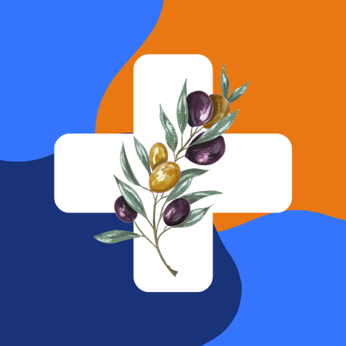

<ion-content [fullscreen]="true" class="centrer-contenu">
  <br><br>
  
  <h1 class="primary">Shifai</h1>
  <br><br>
  <p>Votre sante entre vos mains</p>
  <br><br>
  <ion-button routerLink="/homeindividu">Découvrez nos services</ion-button>

</ion-content>
<div class="page-footer">
<p class="white">Si vous étes un medecin </p>
  <ion-button color="warning" routerLink="/homemedecin">Version Pro</ion-button>
</div>
